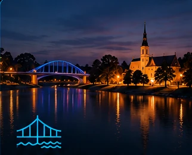
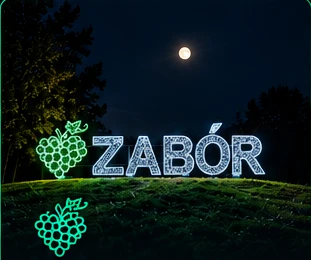
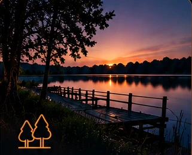

KROSNO ODRZAŃSKIE
krosno.cloud
Historia, rzeka, możliwości.
Nadodrzański charakter, bogata historia i przestrzeń dla nowych inicjatyw.
Odwiedź Krosno OdrzańskieKrosno Odrzańskie Cloud, Zabór Cloud i Ochla Cloud — trzy niezależne obszary połączone ideą współpracy i wspólnej przestrzeni cyfrowej.
Poznaj trzy cloudyKażdy z własną tożsamością. Wszystkie z równym miejscem w porozumieniu.

Historia, rzeka, możliwości.
Nadodrzański charakter, bogata historia i przestrzeń dla nowych inicjatyw.
Odwiedź Krosno Odrzańskie
Winnice, natura, ludzie.
Zielone otoczenie, winnice, społeczność i przestrzeń do życia oraz działania.
Tu jesteś
Spokój, przyroda, przyszłość.
Bliskość natury, rekreacja i przestrzeń dla zrównoważonego rozwoju.
Odwiedź Ochla CloudNie łączymy gmin ani administracji. Łączymy trzy niezależne przestrzenie cyfrowe — z własną tożsamością i wspólną ideą.
Dawniej porozumienia budowano między gminami. Tutaj punktem wyjścia są cloudy: lokalne przestrzenie w sieci, które mogą współistnieć, inspirować się i współpracować — bez utraty swojej niezależności.
Krosno Odrzańskie, Zabór i Ochla występują tu na równych zasadach. Każdy obszar ma własny adres, własny charakter i taką samą widoczność.
Trzy domeny, trzy odrębne tożsamości. Wspólnota nie oznacza ujednolicenia.
Żaden cloud nie jest nadrzędny. Każdy jest pełnoprawną częścią porozumienia.
Od jednej strony do drugiej prowadzi prosta droga — wspólna sieć odsyła do każdego z partnerów.
To koncepcja wspólnej obecności w internecie, nie formalne porozumienie jednostek samorządu terytorialnego.
Nie. Cloud Alliance to koncepcja współpracy cyfrowej, a nie nowa jednostka administracyjna ani formalne porozumienie samorządów.
Każdy cloud zachowuje własną tożsamość. Wspólna nawigacja pozwala odkrywać pozostałe obszary bez podporządkowania ich jednej stronie.
Równe miejsce w sieci, wzajemna widoczność i przestrzeń do rozwijania wspólnych inicjatyw.